Kunskapscentrum
Kommunismens
brott mot
mänskligheten.
Över hundra miljoner människor dödades av kommunistiska regimer under 1900-talet. Här är deras historia – land för land, med källor. För att den aldrig ska upprepas.
Siffran 100 miljoner: Courtois m.fl., Svarta boken om kommunismen (1997); samma bedömning görs av Victims of Communism Memorial Foundation.
Ny fördjupning
Kommunismen i Sverige
SKP, Wollweberligan, Moskvapengarna, VPK, maoisterna – och dagens vänsterextremism.
Läs om SverigeTidslinje
- 1917Bolsjevikernas kupp
- 1932Holodomor
- 1940Katyn
- 1941Första deportationen från Baltikum
- 1949Operation Priboi
- 1956Ungern
- 1958Stora språnget
- 1961Berlinmuren
- 1966Kulturrevolutionen
- 1975Röda khmererna tar Phnom Penh
- 1977Röda terrorn i Etiopien
- 1989Himmelska fridens torg · Muren faller
- 2021Protesterna på Kuba
- IdagNordkorea, Xinjiang, Venezuela
Berättelserna
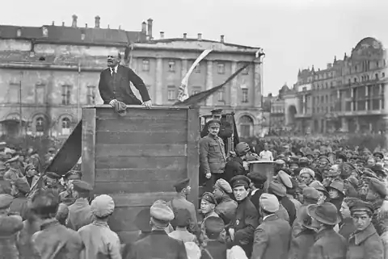
1917–1953 · Sovjetunionen
Lenin och den röda terrorn
Bolsjevikerna tog makten 1917 och skapade inom några veckor den hemliga polisen Tjekan. Under inbördeskriget infördes gisslantagning, summariska avrättningar och de första lägren – grunden för allt som följde.
Källa: Britannica: Cheka
Läs mer hos Victims of Communism →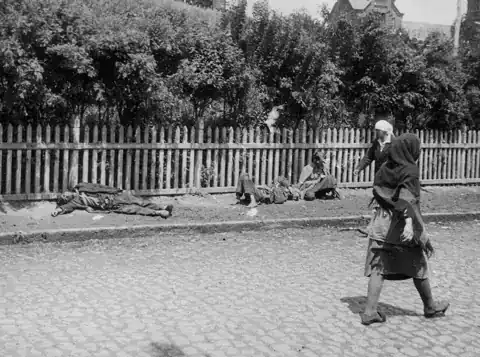
1932–1933 · Ukraina
Holodomor – svälten som var ett vapen
Tvångskollektiviseringen och orimliga spannmålskvoter ledde till svält i Ukraina. Byar som inte nådde kvoterna svartlistades och bönder hindrades från att lämna området. Demografer beräknar omkring 3,9 miljoner döda av överdödlighet i Ukraina.
Källa: Rudnytskyi m.fl., Canadian Studies in Population 2015 · Britannica: Holodomor
Läs mer hos Victims of Communism →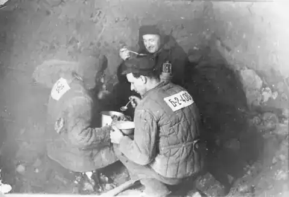
1930–1953 · Sovjetunionen
Gulag
Ett nät av tvångsarbetsläger från Vita havet till Kolyma. År 1936 satt omkring fem miljoner människor i lägren, och nivån låg kvar till Stalins död 1953. Västerländska forskare uppskattar att 1,2–1,7 miljoner dog i Gulag 1918–1956 – fångar för ”kontrarevolution”, ett skämt eller en släktings ”brott”.
Källa: Britannica: Gulag
Läs mer hos Victims of Communism →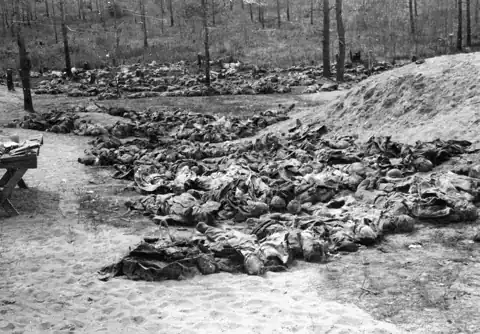
1940 · Polen
Katyn
Våren 1940 sköt NKVD omkring 22 000 polska officerare, poliser och intellektuella. Sovjetunionen skyllde på Tyskland i nästan 50 år och erkände först 1990.
Källa: Britannica: Katyn Massacre
Läs mer hos Victims of Communism →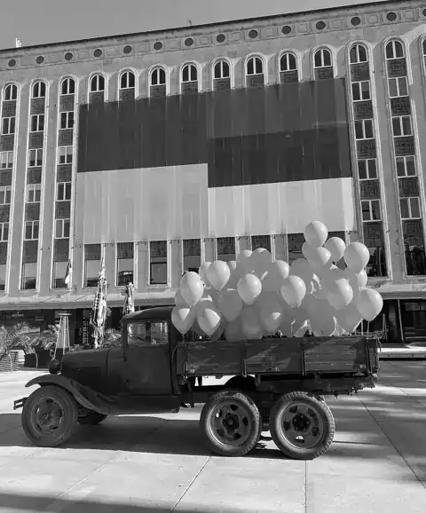
1941 & 1949 · Baltikum
Deportationerna
I juni 1941 och mars 1949 deporterades tiotusentals ester, letter och litauer i boskapsvagnar till Sibirien. Bara i operation Priboi 1949 fördes nära 100 000 bort – många av dem barn och gamla. Det är därför tusentals balter flydde över Östersjön till Sverige 1944.
Källa: VOC: Baltics · Britannica: Baltic states – Soviet occupation
Läs mer hos Victims of Communism →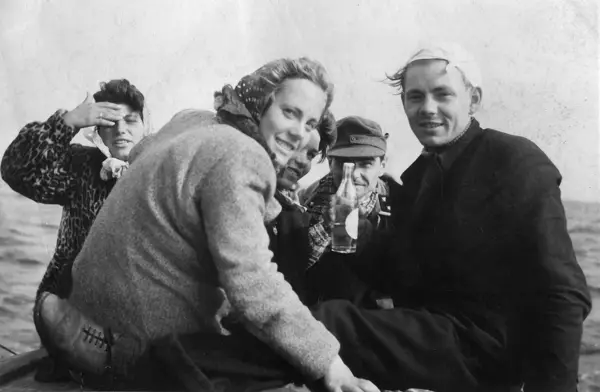
1944 · Estland, Lettland, Sverige
Flykten över Östersjön
När Röda armén återvände 1944 flydde tusentals ester och letter i små båtar över Östersjön till Sverige, bland annat till Dalarö i Stockholms skärgård. De visste vad sovjetstyret innebar – deportationerna 1941 hade redan drabbat deras grannar.
Källa: Britannica: Estonia · Arkivfoto: Ellen i Dalarö 24/9 1944
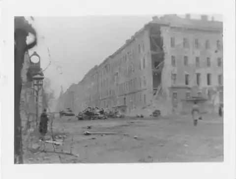
1956 · Ungern
Ungernrevolten
Ungrarna reste sig mot den sovjetstyrda regimen hösten 1956. Sovjetiska stridsvagnar slog ned upproret; omkring 2 500 ungrare dödades och cirka 200 000 flydde landet. Premiärministern Imre Nagy avrättades 1958.
Källa: Britannica: Hungarian Revolution
Läs mer hos Victims of Communism →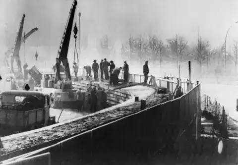
1961–1989 · Tyskland
Berlinmuren
DDR byggde muren för att stoppa sina egna medborgare från att fly. Minst 140 människor dödades vid muren i Berlin, de flesta skjutna av gränssoldater.
Källa: Stiftung Berliner Mauer – Todesopfer
Läs mer hos Victims of Communism →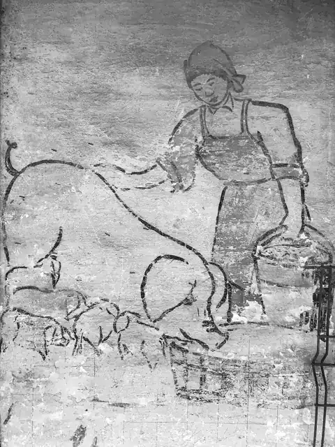
1958–1962 · Kina
Stora språnget
Maos plan att på några år köra om Storbritannien slutade i historiens dödligaste svält. Historikern Frank Dikötter uppskattar minst 45 miljoner förtida dödsfall; andra forskare anger lägre tal, men alla räknar i tiotals miljoner.
Källa: Dikötter, Mao’s Great Famine (2010)
Läs mer hos Victims of Communism →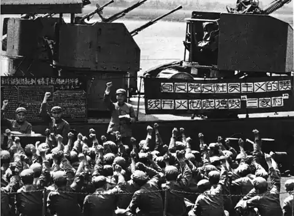
1966–1976 · Kina
Kulturrevolutionen
Rödgardister förödmjukade, torterade och dödade lärare, ”klassfiender” och partikamrater. Sociologerna Walder och Su uppskattar 750 000–1,5 miljoner döda bara på landsbygden.
Källa: Walder & Su, The China Quarterly 2003 · Britannica: Cultural Revolution
Läs mer hos Victims of Communism →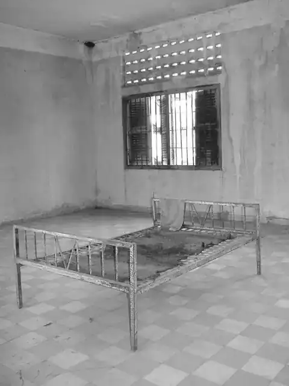
1975–1979 · Kambodja
Röda khmererna
Städerna tömdes, pengar, religion och familjeliv avskaffades. Omkring 1,7 miljoner människor – nästan en fjärdedel av befolkningen – dog av avrättningar, svält och slavarbete. I fängelset S-21 (Tuol Sleng) överlevde bara en handfull av tusentals fångar.
Källa: Yale Cambodian Genocide Program
Läs mer hos Victims of Communism →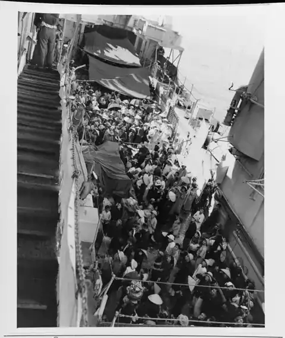
1975–1995 · Vietnam
Båtflyktingarna
Efter kommunisternas seger skickades hundratusentals till ”omskolningsläger” och hundratusentals flydde i överfulla båtar över Sydkinesiska havet – många drunknade eller rånades av pirater.
Källa: UNHCR: The State of the World’s Refugees 2000, kap. 4
Läs mer hos Victims of Communism →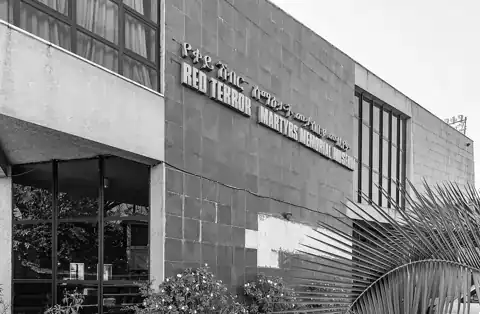
1977–1978 · Etiopien
Den röda terrorn
Militärjuntan Derg, som styrdes enligt marxist-leninistiska principer, krossade 1977–78 verkliga och påstådda motståndare. Enligt Britannica dödades upp till 100 000 människor, och tusentals torterades eller fängslades. Juntans ledare dömdes av etiopisk domstol för folkmord 2006–2008.
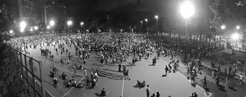
1989 · Kina
Massakern på Himmelska fridens torg
Natten till 4 juni 1989 sköt armén mot obeväpnade demonstranter i Peking. Hur många som dödades är fortfarande okänt eftersom partiet förbjuder all granskning – uppskattningar varierar från hundratals till tusentals.
Källa: Britannica: Tiananmen Square incident
Läs mer hos Victims of Communism →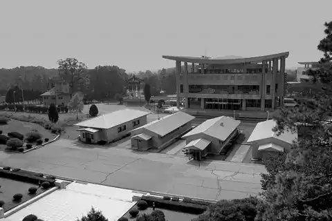
1948–idag · Nordkorea
Nordkorea
FN:s undersökningskommission fann 2014 att regimen begår brott mot mänskligheten – bland annat utrotning, slaveri, tortyr och svält. Uppskattningsvis 80 000–120 000 politiska fångar hålls i läger.
Källa: FN:s undersökningskommission (COI) 2014
Läs mer hos Victims of Communism →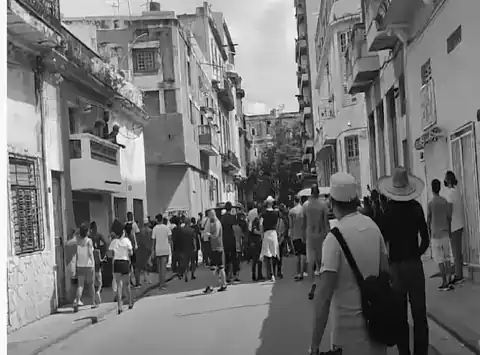
1959–idag · Kuba
Kuba
En enpartistat sedan 1959. Efter de landsomfattande protesterna 11 juli 2021 dokumenterade Human Rights Watch godtyckliga gripanden, misshandel och skenrättegångar mot hundratals demonstranter.
Källa: Human Rights Watch: Prison or Exile (2022)
Läs mer hos Victims of Communism →
2017–idag · Kina
Uigurerna i Xinjiang
Över en miljon uigurer och andra muslimer har enligt forskare spärrats in i läger. FN:s människorättskontor bedömde 2022 att övergreppen kan utgöra brott mot mänskligheten.
Källa: OHCHR: Assessment on Xinjiang (2022)
Läs mer hos Victims of Communism →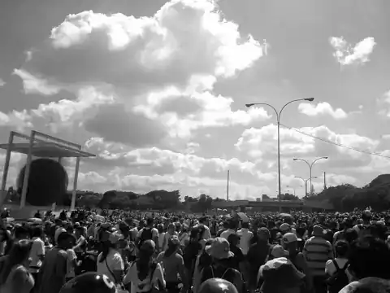
1999–idag · Venezuela
Venezuela – 2000-talets socialism
Chávez och Maduros ”1900-talssocialism” för 2000-talet ledde till kollaps. FN:s faktainsamlingsuppdrag fann 2020 skäl att tro att brott mot mänskligheten begåtts, och mer än sju miljoner venezuelaner har lämnat landet.
Källa: FN:s faktainsamlingsuppdrag om Venezuela (2020) · R4V – FN:s plattform för flyktingar från Venezuela
Läs mer hos Victims of Communism →
Vittnesmål
Hör dem som överlevde.
Siffror kan bli abstrakta. Människor blir det aldrig. Victims of Communisms Witness Project har filmat överlevande från Sovjetunionen, Kina, Kuba, Vietnam, Venezuela och Östeuropa. Börja här:
Läs mer hos Victims of Communism
Fördjupa dig.
Victims of Communism Memorial Foundation instiftades 1993 genom ett enhälligt beslut i USA:s kongress och driver museum, forskning och utbildning om kommunismens historia. Mycket av inspirationen till detta kunskapscentrum kommer därifrån.
Minnet är vårt ansvar.
Vi är unga som säger nej till kommunismen.
Bli medlem – gratis